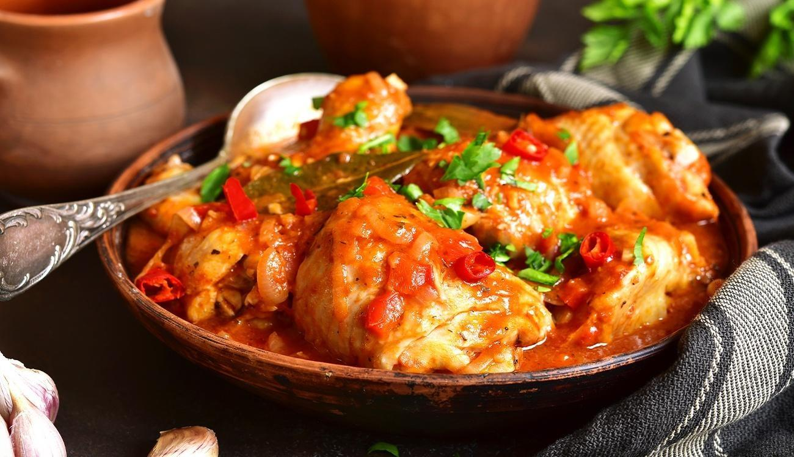

Galinha Caipira

Description
Chicken stew ubiquitous in rural Brazil. Perfect pair with rice and beans, polenta or boiled cassava root.
Ingredients
- A whole ckicken weighing close to 2,5kg (roughly 3 pounds). Avoid industrially grown birds, as those can make the stew very greasy and flavorless.
- A cup of diced onions of any kind.
- Half a cup of diced chives.
- A tablespoon of lard.
- A full kettle of boiled water.
Steps
- Cut the chicken into pieces. Remove offal or small bones, if you want. Salt and pepper to taste now.
- In a pan (best if cast iron), add the lard and heat it up very well.
- Add the chicken and lower the heat.
- After the meat sears, add the diced onions.
- When the onions brown, cover the pot with boiling water, and let it simmer for two hours. If it dries, add more water.
- After those two hours, add the diced chives and simmer it for more thirty minutes.